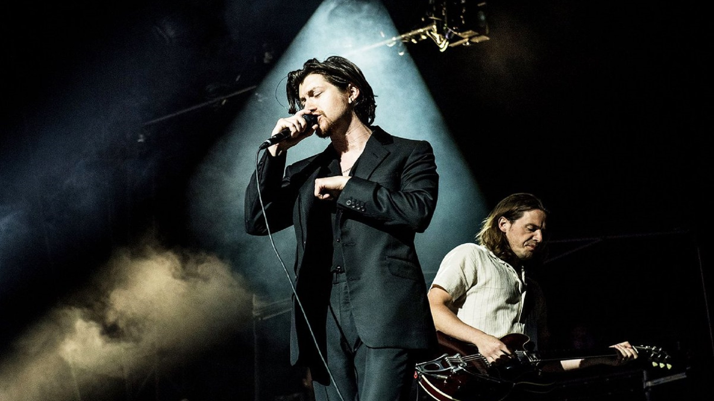
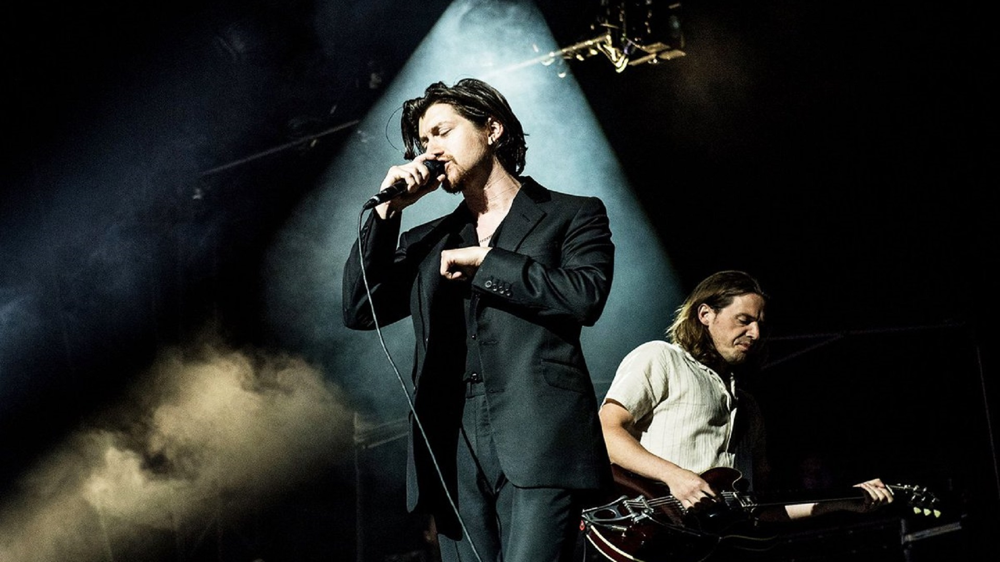

Integrantes de la banda
Alex Turner
Alexander David Turner es un músico, cantante, compositor y productor discográfico británico, conocido por ser el vocalista y principal compositor de la banda de rock Arctic Monkeys; también ha publicado con su proyecto paralelo The Last Shadow Puppets y en solitario. Cuando tenía 16, Turner formó Arctic Monkeys junto a otros tres amigos en su natal Sheffield. Su álbum debut, Whatever People Say I Am, That's What I'm Not (2006), se convirtió en el álbum debut de venta más rápida en toda la historia del Reino Unido, siendo posicionado en el número 30 de la lista de «los mejores álbumes debut de todos los tiempos» de la revista Rolling Stone. Alexander David Turner nació el 6 de enero de 1986, en el suburbio de High Green en Sheffield, Yorkshire del Sur, siendo hijo único de los profesores Penny y David Turner. Su madre era profesora de alemán, mientras que su padre enseñaba física y música en la Rawmarsh Community School de Rotherham. Durante viajes en coche, su madre lo introduciría a música de Led Zeppelin, David Bowie, Jackson Browne, The Eagles, The Carpenters, Al Green, The Beatles, y The Beach Boys. Su padre en cambio era un aficionado del jazz y la música swing, particularmente de Frank Sinatra. Él tocaba el saxofón, la trompeta, y el piano, también había formado parte de big bands. Turner tomaría clases de piano hasta los ocho años.
 

Matt Helders
Nacido el 7 de mayo de 1986 en Sheffield Reino Unido ,Matthew Helders es el baterista de la banda británica Arctic Monkeys. Es el corista más destacable, apareciendo en pistas como “You Probably Couldn’t See For The Lights But You Were Staring Straight At Me”, "I Bet You Look Good on the Dancefloor”, "Teddy Picker" y "D Is For Dangerous"


Jamie Cook
Jamie Robert Cook nacido el 8 de julio de 1985 es el guitarrista principal de Arctic Monkeys. Jamie Cook y Alex Turner son vecinos en High Green. Al igual que Alex Turner, Cook pidió un instrumento musical como regalo de Navidad en 2001, recibiendo su primera guitarra eléctrica. Cook ha sido el miembro más franco de la banda, diciendo: (que él) “odia jodidamente a la prensa” y defendiendo a la banda numerosas veces diciendo: “No podría vernos siendo como Coldplay, sería muy aburrido. Haces giras por tres años y tocas el mismo concierto noche tras noche. Debe ser muy depresivo. A alguna gente le debe encantar hacer eso, pero nosotros no podríamos”.